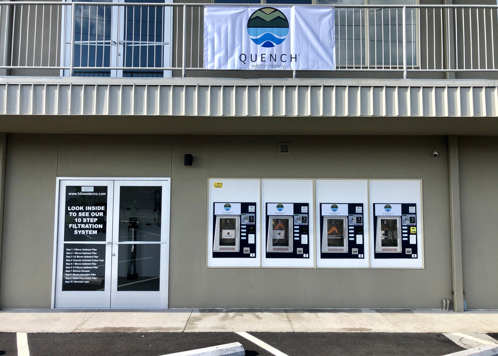
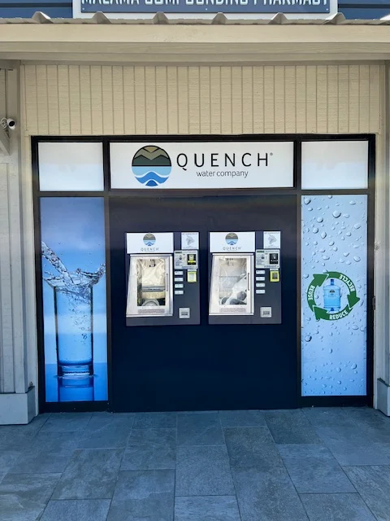
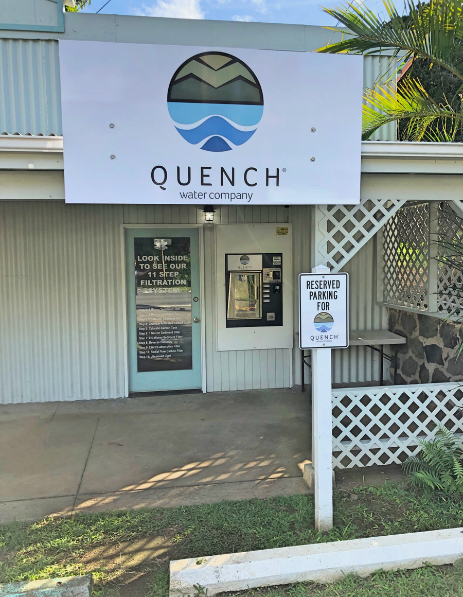

A default Wix template with a login in the top-right and nowhere for a customer to go. The brand was buried under navigation.
A proper hero. A real call-to-action. A brand that looks like it belongs on the side of five real buildings.
Quench Water Co is a family-run water-delivery company with five locations across the Big Island of Hawai'i. The product is great. The story is great. The storefronts, each hand-painted with the same blue-and-white mark, are genuinely beautiful.
The site they'd inherited · a default Wix template with a handful of edits · didn't show any of that. It opened with a stock mountain photo stacked on top of the logo. The locations were listed as raw street addresses. The only call-to-action on the page was Log In.
They didn't need a rebrand. They needed someone to take the site that already existed and treat it with a little bit of care.
We kept everything they'd already paid for · the logo, the photography, the five locations, the copy about community and health. We changed the frame around it.
A proper hero. A typography system that wasn't fighting the brand. A storefront gallery instead of a phone-book list. A contact button where the log-in had been. We cut the account system entirely · nobody was using it, and it was the largest block of code on the homepage.
The whole thing shipped in a single day, under the Starter tier. No deposit. Paid on launch.



Quench is the case study that made the NearBlack pitch real for us. The old site wasn't broken · it loaded, it took orders, it listed the addresses · but it was quietly undercutting a brand the owners had spent years building in paint and plywood on the side of five real buildings.
A refresh, not a rebuild. One day instead of three months. One flat invoice instead of a retainer. And the thing they were already proud of · finally visible on the screen.